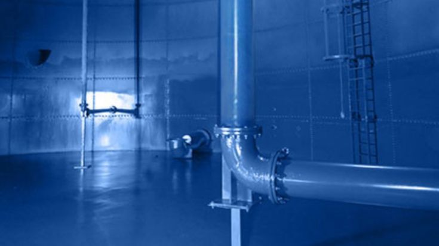
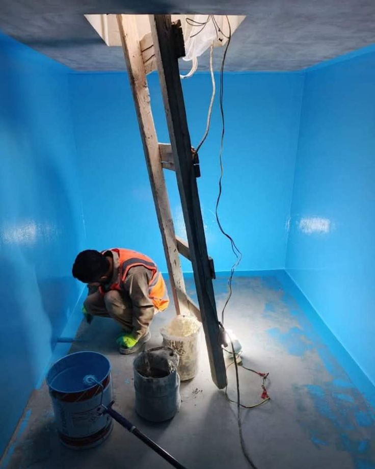
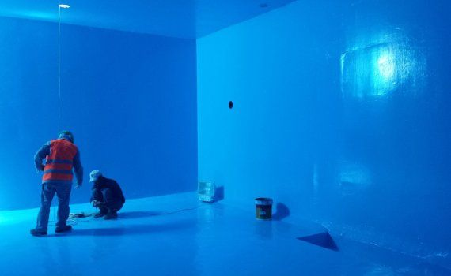
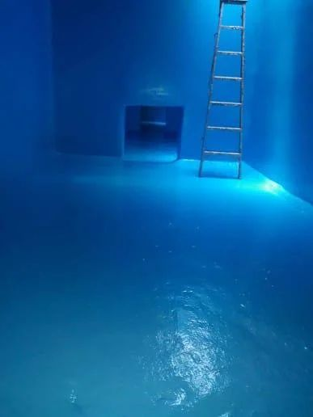

مقدمة
يعد الضمان أحد أهم العوامل التي يبحث عنها العميل عند اختيار الجهة التي ستتولى عزل خزان مياهه، فهو الدليل العملي على ثقة الشركة في جودة موادها وكفاءة فريقها الفني. ولهذا تقدم شركة اعمار المنزل للخدمات المنزلية خدمة عزل خزانات بضمان 10 سنوات بالرياض تمنح العميل راحة بال كاملة وحماية طويلة الأمد لمياه منزله دون قلق من تكرار مشكلات التسرب أو التلوث.
لا يقتصر مفهوم الضمان على مجرد وعد تسويقي، بل هو التزام حقيقي مبني على استخدام مواد عزل عالية الجودة وتنفيذ دقيق يتبع أعلى معايير الجودة الفنية. وعندما تختار شركة عزل خزانات بضمان 10 سنوات بالرياض فإنك في الواقع تختار الاطمئنان لمدة عقد كامل دون الحاجة للتفكير في إعادة العزل أو القلق من تدهور جودة المياه المخزنة.
وتحرص شركة اعمار المنزل للخدمات المنزلية على أن يكون الضمان المقدم مكتوبًا وموثقًا، وليس مجرد وعد شفهي، بحيث يشعر العميل بالثقة الكاملة في الخدمة التي يحصل عليها. وهذا ما يميز شركة عزل خزانات بضمان 10 سنوات بالرياض عن الكثير من الجهات التي تقدم عروضًا مغرية دون التزام فعلي بجودة التنفيذ أو مدة الضمان المعلنة.
وفي هذا المقال سنتناول بالتفصيل كل ما يخص خدمة عزل الخزانات بضمان طويل الأمد، بداية من أهمية الضمان وحتى المواد والخطوات التي تجعل شركة اعمار المنزل الخيار الأمثل لكل من يبحث عن حل دائم ومضمون لحماية خزان مياهه.
لماذا يعتبر الضمان الطويل معيارًا مهمًا عند اختيار شركة عزل الخزانات؟
عندما تقدم جهة ما ضمانًا يمتد لعشر سنوات كاملة، فهذا يعكس ثقتها الفعلية في جودة المواد المستخدمة ومهارة الفريق المنفذ. ومن أهم أسباب أهمية الضمان الطويل:
- حماية مالية للعميل من تكاليف إعادة العزل المتكررة.
- مؤشر واضح على جودة المواد المستخدمة في التنفيذ.
- دليل على التزام الشركة بمعايير تنفيذ صارمة.
- راحة بال كاملة دون الحاجة لمتابعة حالة الخزان بشكل مستمر.
- ثقة أكبر عند التعامل مع شركة عزل خزانات بضمان 10 سنوات بالرياض مقارنة بالشركات التي لا تقدم أي ضمان حقيقي.
ولهذا فإن العملاء الذين يبحثون عن حل دائم لا يكتفون بالسؤال عن السعر فقط، بل يحرصون على التأكد من مدة الضمان وشروطه قبل اتخاذ قرار التعاقد مع أي شركة عزل خزانات بضمان 10 سنوات بالرياض.
ما الذي يجعل ضمان 10 سنوات ممكنًا؟

لا يأتي الضمان الطويل من فراغ، بل هو نتيجة مباشرة لعدة عوامل فنية دقيقة تحرص شركة اعمار المنزل للخدمات المنزلية على الالتزام بها في كل مشروع، ومنها:
- استخدام مواد عزل معتمدة عالميًا ومطابقة للمواصفات القياسية السعودية.
- تنظيف وتجهيز سطح الخزان بشكل احترافي قبل بدء العزل.
- تنفيذ عدد كافٍ من طبقات العزل بالسماكة المناسبة.
- معالجة جميع نقاط الضعف والفواصل قبل تطبيق مادة العزل.
- إجراء اختبارات ضغط ومياه للتأكد من سلامة العزل قبل التسليم.
وهذه المنهجية الدقيقة هي ما يمكّن شركة عزل خزانات بضمان 10 سنوات بالرياض من تقديم التزام طويل الأمد بثقة تامة، لأن كل خطوة من خطوات التنفيذ تخضع لمراقبة جودة صارمة منذ البداية وحتى التسليم النهائي.
خطوات تنفيذ عزل الخزان بضمان 10 سنوات
أولًا: المعاينة الفنية الشاملة
يبدأ فريق شركة اعمار المنزل بمعاينة دقيقة لحالة الخزان، وتحديد نوعه سواء كان أرضيًا أو علويًا، خرسانيًا أو معدنيًا، لاختيار نوع مادة العزل الأنسب التي تدعم مدة الضمان المطلوبة.
وتشمل هذه المعاينة أيضًا تقييم عمر الخزان الحالي، والتأكد من سلامة قواعده ودعاماته الإنشائية، لأن أي ضعف في البنية الأساسية للخزان قد يؤثر على جدوى تنفيذ عزل بضمان طويل الأمد قبل معالجة هذه المشكلات أولًا.
ثانيًا: التفريغ والتنظيف الكامل
يتم تفريغ الخزان من المياه بالكامل، ثم تنظيفه من الرواسب والطحالب والأتربة المتراكمة على الجدران والقاعدة، تمهيدًا لبدء أعمال العزل بشكل صحيح.
ثالثًا: فحص الشروخ والتسربات القديمة
يقوم الفريق بفحص جميع جوانب الخزان بدقة لتحديد أي شروخ أو نقاط ضعف يجب معالجتها قبل البدء في تطبيق مادة العزل الجديدة، لأن إهمال هذه الخطوة قد يقلل من فعالية الضمان المقدم.
رابعًا: تجهيز السطح

يتم إزالة أي طبقات عزل قديمة متضررة، وتسوية السطح بالكامل لضمان التصاق مادة العزل الجديدة بشكل متجانس على جميع الجدران والأرضية.
خامسًا: تنفيذ طبقات العزل المعتمدة

يقوم فريق شركة اعمار المنزل للخدمات المنزلية بتطبيق طبقات العزل المعتمدة بعدد وسماكة تدعم مدة الضمان المقدمة، مع مراعاة توزيعها بالتساوي على كامل مساحة الخزان الداخلية.
سادسًا: الفحص النهائي والاختبار

بعد جفاف مادة العزل بالكامل، يتم إجراء اختبار شامل للتأكد من عدم وجود أي تسرب، ثم تعبئة الخزان بالمياه واختباره قبل تسليمه للعميل مع وثيقة الضمان الرسمية.
ماذا يشمل ضمان 10 سنوات المقدم من شركة اعمار المنزل؟
عند التعاقد مع شركة عزل خزانات بضمان 10 سنوات بالرياض، يحصل العميل على تغطية شاملة تتضمن:
- ضمان ضد أي تسرب مياه ناتج عن تلف طبقة العزل.
- ضمان ثبات المادة العازلة دون تشقق أو تقشر خلال فترة الضمان.
- معاينة مجانية دورية للتأكد من سلامة حالة العزل.
- إصلاح فوري لأي عيب مرتبط بجودة التنفيذ خلال فترة الضمان.
- وثيقة ضمان رسمية موقعة تحدد الشروط والمدة بوضوح.
وتحرص شركة اعمار المنزل للخدمات المنزلية على توضيح جميع تفاصيل الضمان للعميل بشفافية كاملة منذ بداية التعاقد، دون أي بنود مبهمة أو شروط مخفية قد تؤثر على حقوق العميل مستقبلاً.
الفرق بين شركة تقدم ضمانًا حقيقيًا وأخرى تقدم وعدًا تسويقيًا فقط
الوعد التسويقي فقط
تعتمد بعض الجهات على الإعلان عن مدة ضمان طويلة دون التزام فعلي بها، وغالبًا ما يظهر ذلك من خلال:
- عدم وجود وثيقة ضمان مكتوبة وموقعة.
- استخدام مواد عزل رخيصة لا تدعم فعليًا مدة الضمان المعلنة.
- صعوبة التواصل مع الشركة عند الحاجة لتفعيل الضمان.
- شروط مبهمة تستثني معظم الحالات الفعلية.
الضمان الحقيقي
تلتزم شركة عزل خزانات بضمان 10 سنوات بالرياض التابعة لإعمار المنزل بتقديم:
- وثيقة ضمان رسمية واضحة الشروط والمدة.
- مواد عزل عالية الجودة تدعم فعليًا المدة المعلنة.
- فريق دعم فني سريع الاستجابة عند الحاجة لتفعيل الضمان.
- شفافية كاملة في جميع بنود التعاقد منذ البداية.
ولهذا يفضل عملاء الرياض التعامل مع شركة اعمار المنزل للخدمات المنزلية التي تترجم وعودها إلى التزامات فعلية موثقة، بدلًا من الاكتفاء بالإعلانات التسويقية التي لا تصمد أمام أول مشكلة حقيقية.
مواد العزل المستخدمة لدعم الضمان الطويل
يعتمد تحقيق ضمان 10 سنوات كاملة على اختيار مواد عزل عالية الجودة تتحمل عوامل الطقس المختلفة في الرياض، ومن أبرز هذه المواد:
- مواد إيبوكسي معتمدة صحيًا ومقاومة للتآكل على المدى الطويل.
- طبقات بوليمرية مرنة تقاوم التشقق الناتج عن تغير درجات الحرارة.
- مواد مقاومة للأشعة فوق البنفسجية للخزانات العلوية المعرضة للشمس.
- طبقات أسمنتية مطاطية توفر مقاومة إضافية للرطوبة والتسرب.
وتحرص شركة عزل خزانات بضمان 10 سنوات بالرياض على اختبار كل دفعة من المواد المستخدمة للتأكد من مطابقتها لمعايير الجودة قبل البدء في أي مشروع، لضمان أن الضمان المقدم للعميل مبني على أساس فني حقيقي وليس مجرد رقم تسويقي.
ولا يقتصر الأمر على اختيار المادة المناسبة فقط، بل يمتد إلى طريقة تخزينها ونقلها إلى موقع العمل، إذ إن تعرض بعض مواد العزل لدرجات حرارة غير مناسبة أو لفترات تخزين طويلة قد يؤثر على خصائصها الفنية قبل حتى استخدامها، ولهذا تعتمد شركة اعمار المنزل على موردين معتمدين يضمنون سلامة المواد من مصدرها وحتى لحظة التطبيق الفعلي على جدران الخزان.
كيف تحافظ على صلاحية الضمان طوال المدة؟
لضمان استمرار سريان الضمان المقدم من شركة عزل خزانات بضمان 10 سنوات بالرياض طوال العشر سنوات كاملة، ينصح باتباع بعض الإرشادات البسيطة:
- تجنب استخدام أدوات حادة عند تنظيف الخزان من الداخل.
- الإبلاغ الفوري عن أي ملاحظة غير طبيعية في لون أو طعم المياه.
- عدم إجراء أي تعديلات على طبقة العزل من جهات غير معتمدة.
- الاحتفاظ بوثيقة الضمان في مكان آمن للرجوع إليها عند الحاجة.
- السماح للفريق الفني بإجراء المعاينات الدورية المتفق عليها.
وتؤكد شركة اعمار المنزل للخدمات المنزلية أن الالتزام بهذه الإرشادات البسيطة يضمن للعميل الاستفادة الكاملة من مدة الضمان دون أي مشكلات لاحقة قد تؤثر على شروط التغطية.
ومن المفيد أيضًا أن يحتفظ العميل بسجل بسيط لتواريخ المعاينات الدورية والملاحظات المسجلة في كل زيارة، فهذا السجل يسهل عملية المتابعة على المدى الطويل، ويساعد الفريق الفني في رصد أي تغيير طفيف في حالة الخزان قبل أن يتحول إلى مشكلة تستدعي تدخلًا أكبر، وهو ما ينسجم تمامًا مع فلسفة شركة عزل خزانات بضمان 10 سنوات بالرياض القائمة على الوقاية المستمرة بدلًا من انتظار ظهور المشكلة.
لماذا تعتبر شركة اعمار المنزل الخيار الأمثل لعزل الخزانات بضمان طويل؟
عند البحث عن شركة عزل خزانات بضمان 10 سنوات بالرياض يحرص العملاء على اختيار جهة تمتلك سجلًا حافلًا من الثقة والمصداقية. ولهذا يفضل الكثيرون شركة اعمار المنزل للخدمات المنزلية لما تتميز به من:
- مواد عزل معتمدة صحيًا وعالية الجودة.
- فريق فني متخصص يمتلك خبرة واسعة في عزل جميع أنواع الخزانات.
- وثيقة ضمان رسمية وموثقة تمتد لعشر سنوات كاملة.
- سرعة الاستجابة عند الحاجة لتفعيل الضمان.
- أسعار تنافسية تتناسب مع جودة الخدمة المقدمة.
- التزام كامل بالمواعيد المتفق عليها مع العميل.
- شفافية تامة في جميع تفاصيل التعاقد والضمان.
كما تعمل شركة عزل خزانات بضمان 10 سنوات بالرياض على تطوير أساليب التنفيذ باستمرار لمواكبة أحدث التقنيات العالمية في مجال عزل الخزانات، بما يضمن للعميل أفضل نتيجة ممكنة على المدى الطويل.
أسئلة يطرحها العملاء غالبًا قبل التعاقد على ضمان 10 سنوات
من واقع خبرة شركة اعمار المنزل مع عملائها، هناك مجموعة من الأسئلة المتكررة التي يحرص العملاء على معرفة إجابتها قبل اتخاذ قرار التعاقد مع أي شركة عزل خزانات بضمان 10 سنوات بالرياض، ومن أبرزها ما إذا كان الضمان يشمل قطع الغيار أو التكاليف الإضافية، وهل يغطي الضمان حالات سوء الاستخدام أم يقتصر على عيوب التصنيع والتنفيذ فقط. وتحرص شركة اعمار المنزل على الإجابة عن هذه التساؤلات بوضوح تام أثناء مرحلة التعاقد، بحيث لا يتفاجأ العميل بأي تفسير مختلف لبنود الضمان عند الحاجة لتفعيله مستقبلاً.
ومن الأسئلة الشائعة الأخرى أيضًا استفسار العملاء عن إمكانية تمديد الضمان بعد انتهاء العشر سنوات، وهو أمر تتيحه شركة اعمار المنزل للخدمات المنزلية من خلال معاينة فنية جديدة للخزان وتقييم حالته، بحيث يمكن للعميل الاستمرار في الحصول على تغطية إضافية إذا كانت حالة العزل لا تزال جيدة، أو البدء في مشروع عزل جديد إذا استدعت الحالة ذلك.
ما الذي يحدد تكلفة عزل الخزان بضمان 10 سنوات؟
تختلف تكلفة الخدمة بناءً على عدة عوامل رئيسية، أهمها حجم الخزان ونوعه سواء كان أرضيًا أو علويًا، وحالته الحالية من حيث وجود شروخ أو تلف يحتاج إلى معالجة إضافية قبل بدء العزل. كما تؤثر نوعية المادة العازلة المختارة على السعر الإجمالي، فالمواد التي تدعم ضمانًا طويل الأمد تكون عادة أعلى جودة وتكلفة من المواد التقليدية قصيرة العمر.
وتحرص شركة اعمار المنزل للخدمات المنزلية على تقديم عرض سعر واضح وشفاف للعميل بعد المعاينة المبدئية للخزان، موضحًا فيه تفاصيل المواد المستخدمة ومدة الضمان المقدمة، حتى يكون العميل على دراية كاملة بما يحصل عليه مقابل التكلفة المدفوعة، دون أي رسوم إضافية مفاجئة بعد الانتهاء من التنفيذ.
ضمان قصير المدى مقابل ضمان 10 سنوات: أيهما أجدى؟
يميل بعض العملاء إلى اختيار الخيار الأقل تكلفة في البداية، معتقدين أنهم بذلك يوفرون المال، لكن الحسابات الفعلية على المدى الطويل تكشف صورة مختلفة تمامًا. فالعزل بضمان قصير المدى قد يبدو أرخص للوهلة الأولى، لكنه غالبًا ما يحتاج إلى إعادة تنفيذ خلال سنوات قليلة، وهو ما يعني تكاليف إضافية متكررة تفوق في مجموعها تكلفة العزل بضمان طويل من البداية.
وعلى النقيض من ذلك، فإن التعامل مع شركة عزل خزانات بضمان 10 سنوات بالرياض يعني استثمارًا واحدًا يغطي عقدًا كاملًا من الحماية، دون الحاجة للقلق بشأن جودة المياه المخزنة أو احتمالية ظهور تسرب مفاجئ خلال هذه المدة الطويلة. وهذا ما يجعل الفارق في التكلفة الأولية بين النوعين استثمارًا مبررًا تمامًا عند حساب التكلفة الإجمالية على مدى السنوات.
هل يختلف الضمان بين الخزانات الأرضية والعلوية؟
نعم، فطبيعة كل نوع من الخزانات تفرض تحديات مختلفة تؤثر على طريقة تنفيذ العزل ومدة استمراريته. فالخزانات الأرضية تتعرض لضغط التربة المحيطة ورطوبتها المستمرة، بينما تتعرض الخزانات العلوية لأشعة الشمس المباشرة وتقلبات درجات الحرارة الحادة بين الليل والنهار، وكلا العاملين يضع اختبارًا مختلفًا لمتانة مادة العزل على المدى الطويل.
ولهذا تعتمد شركة عزل خزانات بضمان 10 سنوات بالرياض على اختيار تركيبة مواد مختلفة قليلاً لكل نوع من الخزانات، بحيث تضمن مقاومة فعلية للتحديات الخاصة بكل موقع، بدلًا من استخدام نفس المادة بشكل عشوائي على جميع أنواع الخزانات بغض النظر عن موقعها أو طبيعة تعرضها للعوامل الجوية.
كما يراعي الفريق الفني عند تنفيذ العزل في الخزانات العلوية إضافة طبقة حماية إضافية مقاومة للأشعة فوق البنفسجية، وهي إضافة ضرورية لضمان عدم تدهور المادة العازلة بفعل التعرض المستمر لأشعة الشمس القوية التي تميز مناخ الرياض على مدار معظم أيام السنة.
دور الصيانة الوقائية في إطالة عمر الضمان
على الرغم من أن الضمان يغطي عيوب التصنيع والتنفيذ، إلا أن الصيانة الوقائية البسيطة تلعب دورًا مكملاً في إطالة عمر العزل الفعلي إلى ما بعد فترة الضمان نفسها. فتنظيف الخزان بانتظام من الرواسب، وفحص الأغطية للتأكد من إحكام إغلاقها، ومراقبة أي تغيير طفيف في مستوى المياه، كلها ممارسات بسيطة تساعد في الحفاظ على سلامة طبقة العزل لأطول فترة ممكنة.
وتقدم شركة اعمار المنزل للخدمات المنزلية لعملائها إرشادات مبسطة حول كيفية الاعتناء بالخزان بين فترات المعاينة الدورية، بحيث يشارك العميل نفسه في الحفاظ على جودة النتيجة النهائية، بدلًا من الاعتماد الكلي على الفريق الفني وحده في كل تفصيلة، وهو ما ينعكس إيجابًا على طول عمر العزل حتى بعد انتهاء مدة الضمان الرسمية.
أخطاء تقلل من فعالية الضمان يجب تجنبها
حتى مع الحصول على ضمان 10 سنوات كامل، هناك بعض الممارسات الخاطئة التي قد تؤثر على فعالية العزل أو تُسقط شروط الضمان، ومن أبرزها:
- الاستعانة بجهات غير معتمدة لإجراء أي تعديلات على الخزان بعد العزل.
- إهمال الإبلاغ عن أي ملاحظة بسيطة اعتقادًا بأنها غير مهمة.
- استخدام مواد تنظيف كيميائية قوية غير مناسبة لطبيعة مادة العزل.
- تجاهل مواعيد المعاينة الدورية المتفق عليها مع الفريق الفني.
- عدم الاحتفاظ بنسخة من وثيقة الضمان الأصلية.
وتنصح شركة عزل خزانات بضمان 10 سنوات بالرياض جميع عملائها بالتواصل المباشر مع الفريق الفني عند أي استفسار بدلًا من اتخاذ أي إجراء بمفردهم، حفاظًا على سريان الضمان طوال المدة المتفق عليها.
أهمية الخبرة المحلية في نجاح الضمان طويل المدى
يختلف مناخ الرياض عن كثير من المناطق الأخرى من حيث شدة الحرارة الصيفية وجفاف الطقس معظم أيام السنة، وهذا يفرض تحديات خاصة على أي مادة عزل يتم استخدامها في المنطقة. فالمادة التي قد تصمد لسنوات طويلة في مناخ معتدل، قد لا تعطي نفس النتيجة تحت درجات الحرارة المرتفعة التي تشهدها الرياض خلال أشهر الصيف.
ولهذا فإن التعامل مع شركة عزل خزانات بضمان 10 سنوات بالرياض تمتلك خبرة محلية حقيقية بمناخ المنطقة يمثل عاملًا حاسمًا في نجاح الضمان المقدم فعليًا، وليس فقط على الورق. فريق شركة اعمار المنزل يعرف تمامًا كيف تتفاعل مواد العزل المختلفة مع طبيعة الطقس في الرياض على مدار فصول السنة، وهذه المعرفة التراكمية هي ما تمكنهم من اختيار المادة الأنسب والطريقة الأدق للتنفيذ في كل مشروع يتولونه.
كما أن وجود فريق محلي يسهل كثيرًا عملية المتابعة والصيانة الدورية المرتبطة بالضمان، فبدلًا من التعامل مع جهة بعيدة قد تستغرق وقتًا طويلاً للاستجابة، يضمن العميل سرعة وصول الفريق الفني عند الحاجة، وهو ما يعزز الثقة الكاملة في جدية الضمان المقدم وقابليته للتفعيل الفعلي عند الضرورة.
خدمات شركة اعمار المنزل للخدمات المنزلية
لا تقتصر خدمات شركة اعمار المنزل للخدمات المنزلية على عزل الخزانات بضمان طويل فقط، بل تقدم مجموعة متكاملة من الحلول المنزلية التي تساعد العملاء في الحفاظ على منازلهم بأفضل حالة.
ومن أبرز الخدمات:
- عزل خزانات المياه بضمان يصل إلى 10 سنوات.
- كشف تسربات المياه.
- عزل الأسطح المائي والحراري.
- فحص المنازل والفلل.
- معالجة رطوبة الجدران.
- صيانة وترميم المباني.
كما توفر شركة عزل خزانات بضمان 10 سنوات بالرياض حلولًا مخصصة للمنازل والفلل والشركات والمباني التجارية على حد سواء.
نخدم جميع أحياء الرياض
تقدم شركة عزل خزانات بضمان 10 سنوات بالرياض خدماتها في جميع مناطق الرياض، ومنها:
- حي النرجس.
- حي الياسمين.
- حي الملقا.
- حي العارض.
- حي حطين.
- حي الصحافة.
- حي الندى.
- حي الربيع.
- حي الوادي.
- حي التعاون.
- حي الغدير.
- حي قرطبة.
- حي السويدي.
- حي الشفا.
- حي بدر.
- حي العزيزية.
- حي لبن.
وتوفر شركة اعمار المنزل للخدمات المنزلية سرعة استجابة عالية لضمان الوصول إلى العميل في أقصر وقت ممكن داخل جميع هذه الأحياء.
الأسئلة الشائعة
هل الضمان يشمل جميع أنواع الخزانات؟
نعم، تقدم شركة عزل خزانات بضمان 10 سنوات بالرياض ضمانها لجميع أنواع الخزانات الأرضية والعلوية والخرسانية والمعدنية.
ماذا يحدث إذا ظهر تسرب خلال فترة الضمان؟
يقوم فريق شركة اعمار المنزل بمعاينة الحالة فورًا وإصلاح أي عيب مرتبط بجودة التنفيذ دون أي تكلفة إضافية على العميل طوال فترة الضمان.
هل يمكن نقل الضمان عند بيع العقار؟
نعم، يمكن نقل وثيقة الضمان المقدمة من شركة عزل خزانات بضمان 10 سنوات بالرياض إلى المالك الجديد للعقار وفق الشروط الموضحة في وثيقة الضمان.
هل تقدمون معاينة دورية مجانية خلال فترة الضمان؟
نعم، تحرص شركة اعمار المنزل للخدمات المنزلية على تقديم معاينات دورية مجانية للتأكد من استمرار سلامة العزل طوال مدة الضمان.
هل تكلفة العزل بضمان 10 سنوات أعلى من العزل العادي؟
قد تكون التكلفة أعلى قليلاً نظرًا لجودة المواد المستخدمة، لكنها توفر على العميل تكاليف إعادة العزل المتكررة على المدى الطويل، مما يجعلها استثمارًا مجديًا فعليًا.
خلاصة المقال
إن اختيار شركة عزل خزانات بضمان 10 سنوات بالرياض يمنحك حماية طويلة الأمد لمياه منزلك دون قلق من تكرار مشكلات التسرب أو التلوث، فالضمان الحقيقي الموثق هو انعكاس مباشر لثقة الشركة في جودة موادها ومهارة فريقها الفني.
وتقدم شركة اعمار المنزل للخدمات المنزلية التزامًا فعليًا وليس مجرد وعد تسويقي، من خلال استخدام مواد عزل معتمدة عالميًا، وتنفيذ دقيق يخضع لاختبارات جودة صارمة، ووثيقة ضمان رسمية واضحة الشروط تحمي حقوق العميل طوال عشر سنوات كاملة.
وسواء كنت تبحث عن عزل خزان جديد، أو ترغب في استبدال عزل قديم بحل أكثر ضمانًا واستدامة، فإن التواصل مع شركة عزل خزانات بضمان 10 سنوات بالرياض متمثلة في فريق إعمار المنزل يمنحك القرار الأذكى لحماية مياه منزلك واستثمارك العقاري لسنوات طويلة قادمة.
ولا تنسَ أن قرار العزل بضمان طويل ليس مجرد نفقة إضافية، بل هو استثمار حقيقي في راحة بالك اليومية، فبدلًا من التفكير المتكرر في حالة الخزان أو القلق من ظهور مشكلة مفاجئة، يمنحك الضمان الموثق مساحة كافية للتركيز على أمور حياتك الأخرى، مع اطمئنان كامل إلى أن مياه منزلك محمية بأعلى معايير الجودة المتاحة في السوق حاليًا.
تواصل مع فريق إعمار المنزل الآن
عزل احترافي لخزان مياهك بضمان حقيقي يمتد 10 سنوات كاملة — تواصل معنا اليوم.